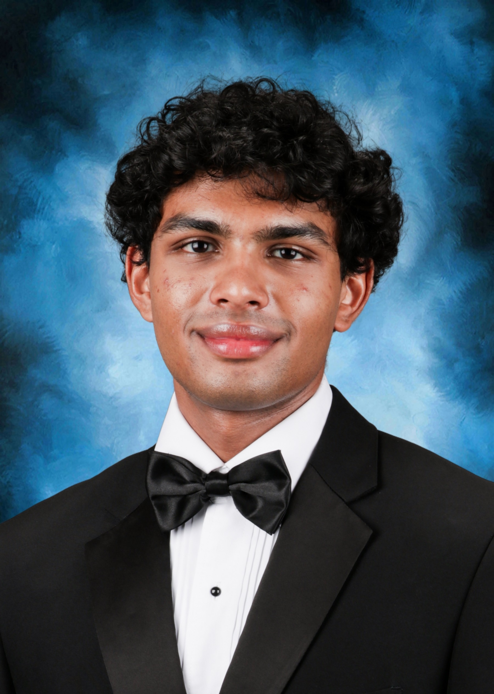

About Me
Mechanical engineering student, builder, and tinkerer based in Austin, TX.
I'm a freshman at UT Austin, studying Mechanical Engineering. I gravitate toward aerospace specifically, since there's something about the ability to design machines as complex as a rocket that can take people to space that I find endlessly compelling, and I want to be part of pushing that industry forward.
The summer before senior year, I worked as a research intern at the Institute for Computing in Research, spending the summer digging into spacecraft attitude control: building out reaction wheel dynamics, tuning a PD controller, and running a grid-search to optimize performance. It was my first real taste of what research actually looks like day to day, and I ended up co-authoring the findings on engrXiv. I've also gotten to see the field from a different angle as a NASA High School Aerospace Scholar, working on a team designing satellite enhancements for lunar exploration.
My interest in engineering started well before that, in Round Rock ISD's engineering pathway: coursework in CAD modeling, human-centered design, and product redesign, including a full ergonomic and magnetic-charging redesign of the Apple Magic Mouse.
I learn best by doing, whether that's debugging a simulation that's quietly producing wrong answers, machining a part from scratch, or rebuilding a vintage lathe in my garage. I care about craft, precision, and understanding the "why" behind every design decision.
Outside of engineering, I'm a big F1 fan, root for the San Antonio Spurs and Manchester United, play basketball myself, and previously ran my own youth basketball training business; teaching is something I'm still passionate about. I also enjoy video games like NBA2K and FIFA, and rock climbing whenever I get the chance.

- Autodesk Inventor
- Fusion 360
- Python
- Java
- NumPy / Matplotlib
- Data Analysis
- Technical Writing
- LaTeX
- Control Systems Modeling